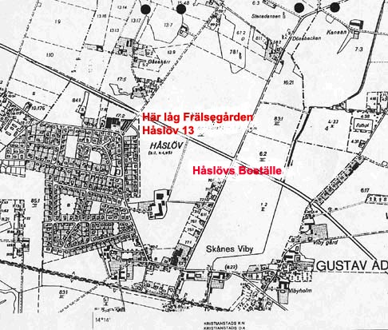

|
|
Viby i gamla tider |
||||||||||||||||||||||||||||||||
|
Håslöv 13 Hur gården exakt såg ut vet vi inte, men vi vet, att Håslöv 13 från begynnelsen var frälsehemman under Trolle Ljungby Fideikommiss, och var belägen ungefär där Håslöv Boställes nuvarande maskinhall ligger.
 Enligt ett protokoll från 1799 rörande Storskiftet i Håslöv, hämtat ur Håslöv Bys kista, ser vi att gården fått en ny ägare i prosten Måns Olsson i Hjärnarp. (Från år 1723 blev det tillåtet, att även präster och borgare fick äga frälsejord). Gården skänkte han sedermera till talman Nils Svenssons dotter på Håslöv 15, Kerstina, och kom då att ingå i "Nils Svensson-imperiumet", Håslöv 11, 13, 15 och 17. Kerstina gifte sig med direktören Jacob Petersson. Dessa båda fick tre barn, varav yngste sonen notarie Pehr Petersson - som bytte till efternamnet Elde - står som ägare för Håslöv 13 enligt protokollen från genomförandet av Laga skifte1834. Några köpe- eller försäljningshandlingar har vi inte lyckats finna. Men då vi kommer fram till kortserien 1831 – 1845 i husförhörslängderna, ser vi, att avstyckningar från den gamla gården görs och nya fastigheter med varierande mantal skapas inom Håslöv 13. Kanske bidrog en lyckosam satsning av kapitalet från försäljning av Håslöv 13, till att Pehr Elde vid sin död i Stockholm 1874 ägde högt värderade fastigheter – vem vet? 16?? – 1793? (Uppgifterna hämtade från Fajerssons hemsida)
1813 – 1820 (Husförhörslängder)
1821 – 1831 (Husförhörslängder)
När vi så kommer fram till 1831-1845 husförhörslängdsserie ser vi att prästen har ändrat gården Håslöv 13 till Håslöv 11 (1/8 dels mantal?). Vi ser också, att "gamle" Michel Svensson, under en period här, är inhyst på gården. |
|||||||||||||||||||||||||||||||||
|
· Porträtt av Nils Svensson · Tablå Håslöv 15 · Tegskifteskarta 1765
· Arrendatorer på 13 · Frälsegården · Gälltoftens · Isakens · Gustav Nils · Österblads · Westes ·Birtens ·Månstorp |
|||||||||||||||||||||||||||||||||